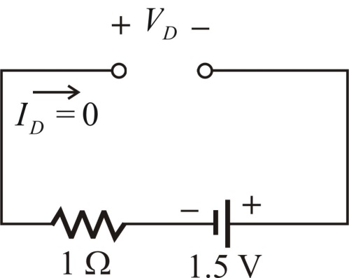
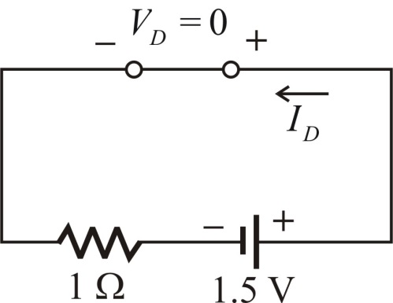

Step 1:
(a)
Connect the cathode of the diode to the positive terminal of the battery and draw the equivalent circuit.
Figure 1
Since the cathode of the diode is connected to the positive of the battery, the diode will be in reverse bias.
An ideal diode in reverse bias, acts as open circuit.
Thus, the diode current is
is .
.
Step 2:
Replace the diode with open circuit and draw the equivalent circuit.

Figure 2
Apply Kirchhoff’s voltage law in the circuit as shown in Figure 2.
Thus, the terminal voltage across the diode is.
is.
Step 3:
(b)
Connect the anode of the diode to the positive terminal of the battery and draw the equivalent circuit.
Figure 3
Since the anode of the diode is connected to the positive of the battery, the diode will be in forward bias.
An ideal diode in forward bias, acts as short circuit.
Thus, the terminal voltage across the diode is
is .
.
Step 4:
Replace the diode with short circuit and draw the equivalent circuit.

Figure 4
Step 5:
Apply Kirchhoff’s Voltage Law in the circuit as shown in Figure 4.
Thus, the diode current  is.
is.